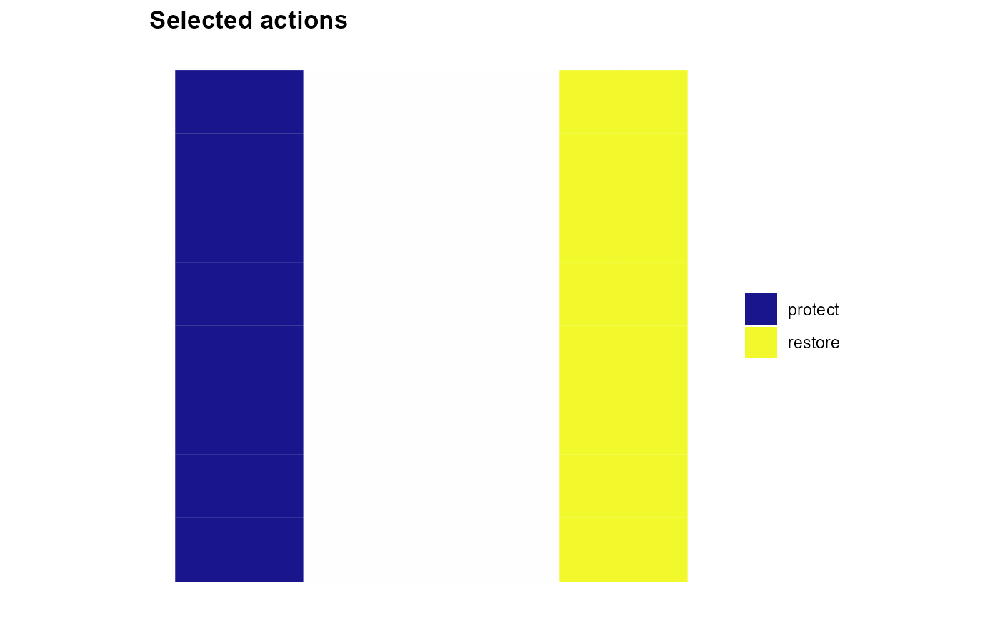

Define an objective that maximizes net profit by combining profits with optional planning-unit and action-cost penalties.
Usage
add_objective_max_net_profit(
x,
profit_col = "profit",
include_pu_cost = TRUE,
include_action_cost = TRUE,
actions = NULL,
alias = NULL
)Arguments
- x
A
Problemobject.- profit_col
Character string giving the profit column in the stored profit table.
- include_pu_cost
Logical. If
TRUE, subtract planning-unit costs.- include_action_cost
Logical. If
TRUE, subtract action costs.- actions
Optional subset of actions to include in the profit and action-cost terms. Values may match
x$data$actions$idand, if present,x$data$actions$action_set.- alias
Optional identifier used to register this objective for multi-objective workflows.
Details
Use this function when decisions generate returns and the objective should optimize the resulting net balance after subtracting selected cost components.
Let:
\(x_{ia} \in \{0,1\}\) denote whether action \(a\) is selected in planning unit \(i\),
\(w_i \in \{0,1\}\) denote whether planning unit \(i\) is selected,
\(\pi_{ia}\) denote the profit associated with decision \((i,a)\),
\(c_i^{PU} \ge 0\) denote the planning-unit cost,
\(c_{ia}^{A} \ge 0\) denote the action cost.
In its most general form, the objective is:
$$ \max \left( \sum_{(i,a) \in \mathcal{D}^{\star}} \pi_{ia} x_{ia} - \sum_{i \in \mathcal{I}} c_i^{PU} w_i - \sum_{(i,a) \in \mathcal{D}^{\star}} c_{ia}^{A} x_{ia} \right), $$
where \(\mathcal{D}^{\star}\) denotes the subset of feasible planning unit–action decisions included in the objective.
If actions = NULL, all feasible actions contribute to both the profit
term and the action-cost term.
If actions is provided, the profit term and the action-cost term are
restricted to that subset. The planning-unit cost term, if included, remains
global.
If include_pu_cost = FALSE, the planning-unit cost term is omitted.
If include_action_cost = FALSE, the action-cost term is omitted.
Repeated calls
With alias = NULL, one explicit single objective can be defined per
problem; a second unaliased definition raises an error. With an alias,
objectives accumulate under distinct names; a repeated alias raises an error.
Aliased definitions preserve an explicitly configured single objective.
To compare alternatives, start from the problem before its objective was added.
Examples
# EXAMPLE: Maximise returns minus implementation costs
#
# Use the same west-to-east profit pattern as above, but now
# charge 9.5 monetary units for every selected action. Some
# locations may no longer generate a positive net return.
sim <- load_sim_multiaction()
returns <- sim$action_costs[, c("pu", "action")]
x_coord <- sim$planning_units$x[
match(returns$pu, sim$planning_units$id)
]
returns$profit <- ifelse(
returns$action == "protect", 12 - x_coord, 4 + x_coord
)
p <- create_problem(
pu = sim$planning_units,
features = sim$features,
dist_features = sim$dist_features,
cost = "cost"
) |>
add_actions(sim$actions, cost = 9.5) |>
add_profit(returns) |>
add_objective_max_net_profit(include_pu_cost = FALSE, alias = "net_profit")
# Unlike gross profit maximisation, leaving a unit unmanaged
# can now be optimal when its best return is below its cost.
if (requireNamespace("rcbc", quietly = TRUE) &&
requireNamespace("ggplot2", quietly = TRUE)) {
solutions <- solve(set_solver_cbc(p, time_limit = 30, verbose = FALSE))
get_objectives(solutions, format = "wide")
print(plot_spatial_actions(solutions, layout = "single"))
}

